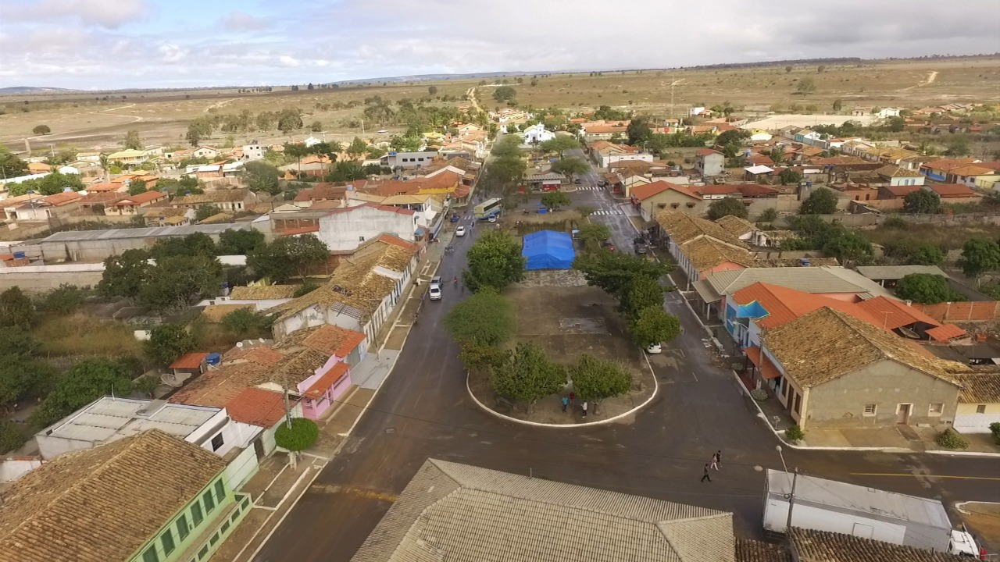

Sobre José Gonçalves

O distrito de José Gonçalves, localizado a cerca de 24 quilômetros da sede de Vitória da Conquista, é um dos territórios mais antigos e simbólicos do Planalto da Conquista. Suas terras foram ocupadas ainda nas primeiras incursões sertanejas, quando famílias vinculadas a João Gonçalves da Costa se estabeleceram na região, que por muito tempo foi conhecida popularmente como “Guigó”, em referência à presença abundante de macacos-guigós. Desde os primeiros anos, a localização estratégica do território, conectando o interior ao litoral, fez do local um ponto importante para o desenvolvimento regional.
O distrito foi oficialmente criado em 27 de agosto de 1915, pela Lei estadual nº 1126, integrando o município de Vitória da Conquista. Ao longo do século XX, a comunidade consolidou-se com base na agropecuária, cultivando milho, mandioca e feijão, além da criação de caprinos e ovinos, enquanto a feira local tornou-se um centro de comércio e encontro social, reunindo moradores de toda a região. A construção da escola primária e da igreja matriz de Nossa Senhora da Conceição reforçou ainda mais os laços comunitários, dando identidade e sentido de pertencimento à população.
Ao longo das décadas, o distrito enfrentou desafios, como a seca da década de 1980, que impactou a produção agrícola, e mudanças econômicas que reduziram o movimento da feira. Ainda assim, a comunidade manteve sua força e identidade cultural. No início do século XXI, José Gonçalves começou a receber importantes investimentos em infraestrutura: a inauguração da base comunitária da Polícia Militar em 2011, a criação da Subprefeitura em 2019 e a implantação da coleta e tratamento de esgoto em 2022, consolidaram avanços significativos para a qualidade de vida da população. A recuperação das estradas vicinais em 2023 reforçou a mobilidade e a integração entre os povoados do distrito, garantindo acesso mais fácil a serviços e oportunidades.
Hoje, José Gonçalves é um lugar que preserva sua memória e tradição, mantendo viva a cultura local através de festas populares, como o São João, e da feira que, mesmo com menor movimento, continua sendo um espaço de reencontros e histórias compartilhadas e pelo esporte onde o mesmo possui seu time passando de geração em geração. A comunidade do distrito valoriza suas raízes, reconhece os desafios do presente e projeta um futuro promissor, conectando tradição, identidade e desenvolvimento. José Gonçalves não é apenas um ponto no mapa; é uma comunidade viva, repleta de histórias, cultura e sonhos que atravessam gerações.